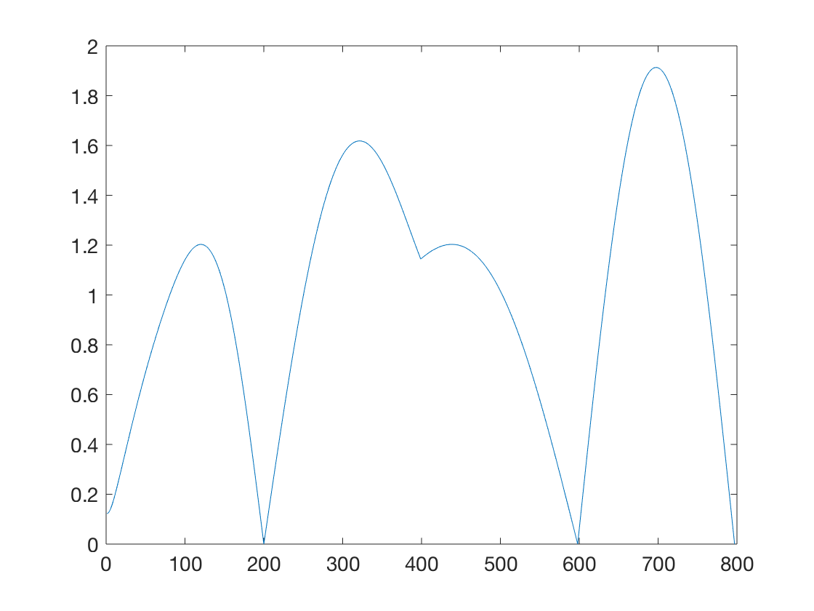
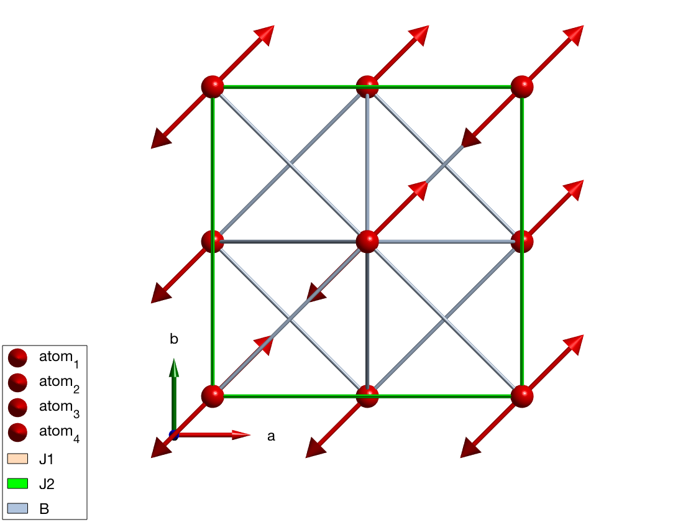
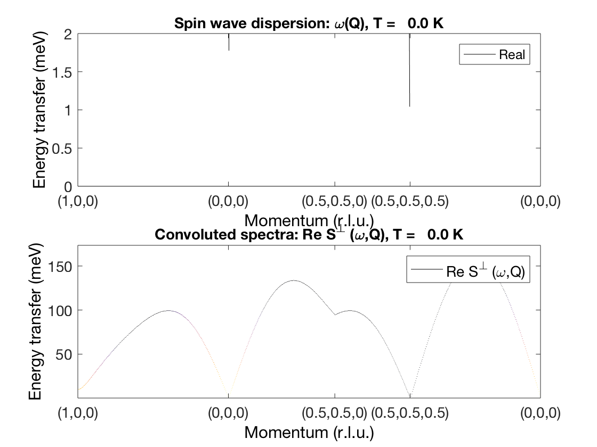
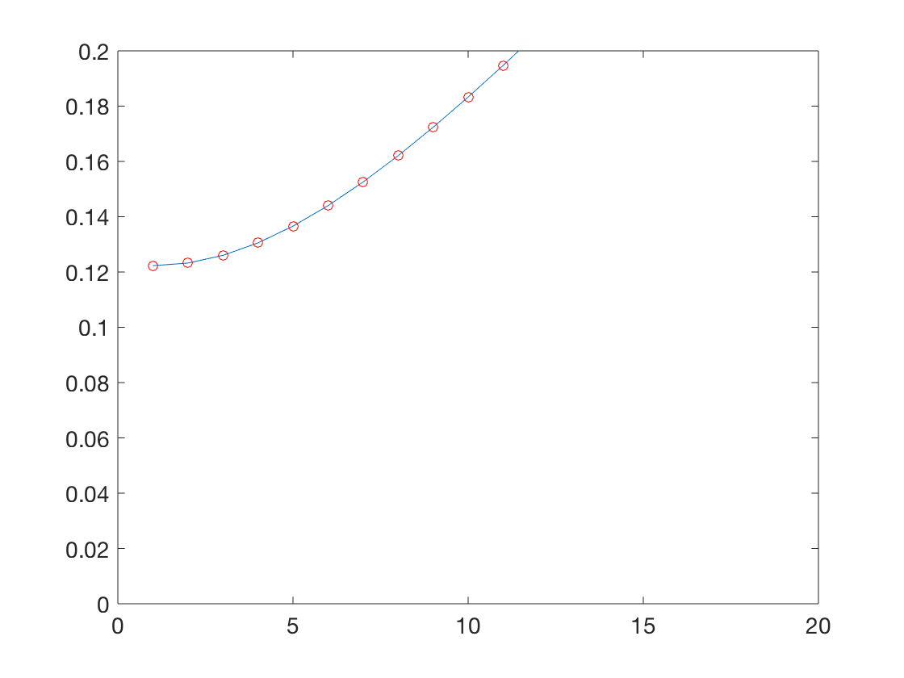

Contents
biquadratic test 2
FCC lattice from: PHYSICAL REVIEW B 85, 054409 (2012)
% MnO parameter set %S = 5/2, J? = 5 K, J =5.5 K S = 5/2; J2 = 5.5; J1 = 5.0; B = 0; g = 1; muB = 1; a = 1; J = J2; j = J1/J2/6; lambda = 0.002*6*J*0; H = 0.15*6*J*0; %Q = -2*B*S^2; Q = 0.01*J; delta = [1 0 0;0 1 0;0 0 1]; delta = [delta;-delta]; theta = asin(-g*muB*H/(12*J*S+2*S*lambda)); nQ = 200; qscan = sw_qscan({[1 0 0] [0 0 0] [1/2 1/2 0] [1/2 1/2 1/2] [0 0 0] nQ}); for ii = 1:size(qscan,2) q = qscan(:,ii)*2*pi; gamma = 1/6*sum(exp(1i*q'*delta')); h1 = cos(a*(q(1)-q(2))/2) + cos(a*(q(2)-q(3))/2) + cos(a*(q(3)-q(1))/2); h2 = cos(a*(q(1)+q(2))/2) + cos(a*(q(2)+q(3))/2) + cos(a*(q(3)+q(1))/2); H1 = 1+lambda/3/J+gamma*sin(theta)^2 + 2*Q/J/S + ... (2*j-Q/3/J/S)*h1 + 2*j*sin(theta)^2*h2; H2 = gamma*cos(theta)^2 + (2*j*cos(theta)^2+Q/3/J/S)*h2; omega(ii) = 6*J*S*sqrt((H1-H2)*(H1+H2)); end figure plot(real(omega)/15/J,'-')
spinw
fcc = spinw; fcc.genlattice('lat_const',[8 8 8]) fcc.addatom('r',[0 0 0],'S',S) fcc.addatom('r',[1/2 1/2 0],'S',S) fcc.addatom('r',[1/2 0 1/2],'S',S) fcc.addatom('r',[0 1/2 1/2],'S',S) fcc.gencoupling fcc.addmatrix('label','J1','value',J1) fcc.addmatrix('label','J2','value',J2,'color','g') % there is a factor 2 difference between SpinW and paper fcc.addmatrix('label','B','value',-0.5*Q/S^3*2) fcc.addcoupling('mat','J1','bond',1) fcc.addcoupling('mat','J2','bond',2) fcc.addcoupling('mat','B','bond',1,'type','biquadratic') fcc.genmagstr('mode','helical','S',[1 -1 -1 -1;1 -1 -1 -1;zeros(1,4)],'k',[1/2 1/2 1/2],'next',[2 2 2],'n',[0 0 1]); plot(fcc)
spin wave
spec = fcc.spinwave(qscan); %spec.omega = spec.omega/15/J; spec = sw_egrid(spec); spec = sw_omegasum(spec,'zeroint',1e-5,'emptyval',0);
figure subplot(2,1,1) sw_plotspec(spec,'mode','disp','colormap',[0 0 0],'axlim',[0 2],'colorbar',false) subplot(2,1,2) sw_plotspec(spec,'mode','color','colorbar',false,'dE',0.01)
figure plot(real(omega)/15/J,'-') hold on plot(spec.omega(1,:)/15/J,'ro') axis([0 20 0 0.2])